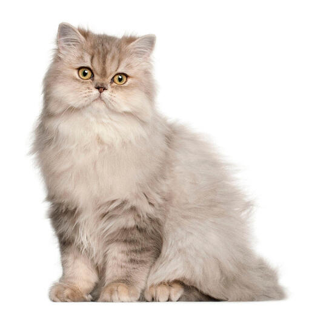

Los gatos son animales domésticos muy populares en todo el mundo. Existen diversas razas y tipos de gatos, cada uno con características únicas.
A continuación, se presentan algunos de los tipos más conocidos:
